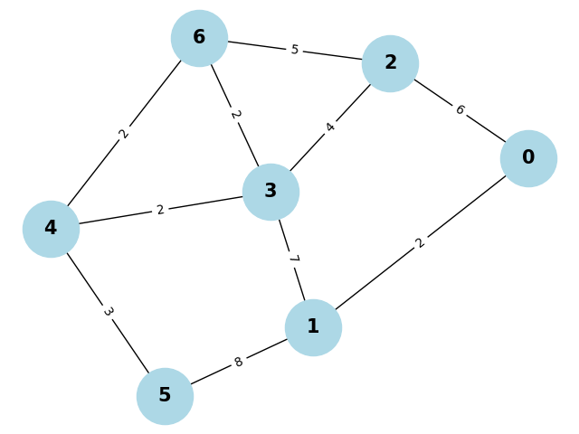

Time Complexity of Dijkstra Algorithm
Cao Yanqiu
N2400360G
October 22, 2024
1 Abstract
In this paper, let's talk about the time complexity of Dijkstra's algorithm. We will first introduce the algorithm and its basic idea, then we will analyze the time complexity of the algorithm in different cases.
2 Introduction of Dijkstra Algorithm
Dijkstra's algorithm is a widely-used algorithm for finding the shortest path between nodes in a weighted graph, particularly when the edges have non-negative weights. It finds the shortest path from a given source node to every other node. It can also be used to find the shortest path to a specific destination node, by terminating the algorithm once the shortest path to the destination node is known.
It was introduced by Dutch computer scientist Edsger W. Dijkstra in 1956 and is especially useful in flight reservations, Internet networks and routing.
3 Basic idea of the Dijkstra Algorithm
We can break the whole algorithm down into several components:
Initialization: Initialize the distance to the source node as 0 and to all other nodes as infinity; initialize the priority queue (used to decide the node visiting sequence) and the parent node (used to trace the shortest path); initialize the visited set as empty.
Get the minimum distance in priority queue: As long as the priority queue is not empty, get the node with the minimum distance from the priority queue. For convenience, we call this node u.
Traverse every neighbour: For each vertex v adjacent to u, as long as v is not visited, we perform the relaxation procedure on edge (u,v), i.e., update the distance from v to source node.
Update the priority queue: After the step above, we need to update the priority queue by pushing the node v and its distance into the queue (in the form of tuple (distance(v), v)).
Repeat: Continue this process for the next unvisited node with the smallest tentative distance, and repeat until all nodes have been visited.
By following the steps above, we can write a pesudo-code for the Dijkstra algorithm: [1]
Algorithm ShortestPath(G, s):
input: A weighted graph G with non-negative edge weights, and a
source vertex s.
Output: The length of a shortest path from s to every other vertex in G; and the predecessor of each vertex on this path.
Initialize distances[s] = 0 and distances[v] = inf for all v != s.
Initialize priority_queue and visited_set.
Initialize parent_node[] = -1 (all vertices are root)
while priority_queue is not empty do
u = ExtractMin(priority_queue)
Determine whether u is visited or not
for each vertex v adjacent to u such that v not visited do
{perform the relaxation procedure on edge (u,v)}
if distances[u] + weight(u, v) < distances[v] then
distances[v] = distances[u] + weight(u, v)
Update parent_node
Update priority_queue
return the distances[] and parent_node[]
4 Time complexity of Dijkstra algorithm
The time complexity is \(O(V² + E)\) for a naive implementation, but using a binary heap priority queue reduces it to \(O((E + V)log V)\), where \(V\) is the number of vertices and \(E\) is the number of edges in the graph.
4.1 The naive implementation of Dijkstra's algorithm
According to the basic idea of this algorithm, we can also analyze the time complexity of the algorithm step by step. The python code of the initialization procedure is as follows:
V = len(self.adjacency_list) # The number of vertices
distances = [float('inf')] * V # Initialize distances to infinity
distances[src] = 0 # Distance to source is 0
parent = [-1] * V # Initialize parent node
visited = set() # Initialize visited set
Obviously, the time complexity of initialization is \(O(V)\). Next is to select the unvisited vertex with the smallest distance:
for _ in range(V):
# Get the current_distance and current_node
min_distance = float('inf')
current_node = None
for node in self.adjacency_list:
if node not in visited and distances[node] < min_distance:
min_distance = distances[node]
current_node = node
The outer loop and inner loop takes \(O(V)\) separately. Therefore, this series of operation takes \(O(V^2)\). After that, we need to traverse and update the distances of every neighbouring vertices:
for _ in range(V):
#......
for neighbour, weight in self.adjacency_list[current_node].items():
#......
This step is quite crucial for the time complexity of the algorithm. Because we assume there's \(V\) vertices and \(E\) edges, so for each vertice, it's adjacency list has \(\frac{E}{V}\) in average, and inner loop takes \(O(\frac{E}{V})\) according to equal distribution. Therefore, this step takes \(O(V \cdot \frac{E}{V}) = O(E)\).
for _ in range(V):
#......
for neighbour, weight in self.adjacency_list[current_node].items():
if neighbour not in visited:
new_distance = distances[current_node] + weight
if new_distance < distances[neighbour]:
distances[neighbour] = new_distance
parent[neighbour] = current_node
There's another way of understanding. Only consider the worst case, i.e., the visiting of every edge will lead to the update of the distance. This is independent from the inner and outer for loop. The time complexity of this step is or approximately equal to \(O(E)\).
Combine the step above and ignore the lower degree, we get the time complexity of the algorithm:
Where \(V\) is the number of vertices and \(E\) is the number of edges in the graph.
4.2 The binary heap implementation of Dijkstra's algorithm
Python’s heapq module implements a binary heap, which is ideal for a priority queue:
heapq.heappop(L): Remove and return the smallest element in list L and rearrange the list to satisfy the heap-order property. The time complexity of this operation is \(O(logV)\), where \(V\) is the number of vertices.heapq.heappush(L, e): Store element e into list L, and rearrange the list to satisfy the heap-order property. The time complexity of this operation is \(O(logV)\), where \(V\) is the number of vertices. [2]
Same as 4.1, the time complexity of initialization is \(O(V)\). Next is to select the unvisited vertex with the smallest distance:
while priority_queue:
current_distance, current_node = heapq.heappop(priority_queue)
# get the minimum value of distance in priority queue
While loop takes \(O(V)\), and every heappop operation takes \(O(log \ V)\). By using heap, the time complexity of this step reduces to \(O(V \ logV)\).
while priority_queue:
#......
for neighbour, weight in self.adjacency_list[current_node].items():
#......
parent[neighbour] = current_node
# update parent_node
heapq.heappush(priority_queue, (temp, neighbour))
# update priority queue
By using same analysis method in 4.1, the time complexity is:
Or we can consider there's \(E\) times of heappush in the worst case, so the time complexity is also \(O(E \ logV)\).
Thus, the overall time complexity is:
There's one thing need to notice. In Python's heapq module, when you insert tuples into a priority queue, heapq sorts the tuples in lexicographical order. This means it first compares the first element of the tuple (i.e., the distance of the neighbour node to the source node in this algorithm), and if the first elements are the same, it moves on to compare the second element (i.e., the node index in this algorithm), and so on.
Furthermore, the Fibonacci heap can further optimize performance theortically, allowing the algorithm's running time to reach \(O(E+V \ logV)\). However, when implementing with a Fibonacci heap, the large constant factors involved in the algorithm may sometimes lead to no significant speedup. [3]
4.3 Compare of two implementations
Someone may think time complexity can definitely optimized by using binary heap, but it's not the case in fact. Actually different graph differs. If we want to represent time complexity by only one parameters (\(V\) is more often used), we can't get the exact time complexity, but we can compare the two implementations more easily.
If the graph is a dense graph, i.e., each vertex is connected to almost all vertices, \(E \approx V^2\).
Using naive implementation, the time complexity is:
Using priority queue, the time complexity is:
Therefore, the naive implementation is more suitable when the graph is dense.
If the graph is a sparse graph, i.e., each vertex is connected to not so many vertices, \(E \approx V\). Using naive implementation, the time complexity is:
Using priority queue, the time complexity is:
Therefore, the binary heap implementation is more suitable when the graph is sparse.
5 Conclusion
The naive implementation has a time complexity of \(O(V^2 + E)\), while the binary heap implementation has a time complexity of \(O((V+E) \ logV)\). The choice between the two implementations depends on the characteristics of the graph being used. For dense graphs, the naive implementation is more suitable, while for sparse graphs, the binary heap implementation is more suitable.
6 References
[1]. Goodrich, Tamassia and Goldwasser, Data Structures and Algorithms in Python, 1st Edition, 2013: P428
[2]. Goodrich, Tamassia and Goldwasser, Data Structures and Algorithms in Python, 1st Edition, 2013: P251
[3]. https://en.wikipedia.org/wiki/Dijkstra%27s_algorithm
Appendix
A.1 The naive implementation of Dijkstra's algorithm
class Graph:
def __init__(self, graph):
self.adjacency_list = graph
def dijkstra_naive(self, src):
"""The naive implementation of Dijkstra's algorithm."""
V = len(self.adjacency_list) # Number of vertices
distances = [float('inf')] * V # Initialize distances to infinity
distances[src] = 0 # Distance to source is 0
parent = [-1] * V
visited = set()
for _ in range(V):
# Step 1: Select the unvisited vertex with the smallest distance
# Get the current_distance and current_node
min_distance = float('inf')
current_node = None
for node in self.adjacency_list:
if node not in visited and distances[node] < min_distance:
min_distance = distances[node]
current_node = node
if current_node is None:
break # All reachable nodes have been processed
# Mark the current node as visited
visited.add(current_node)
# Step 2: Update the distances of the neighboring vertices
for neighbour, weight in self.adjacency_list[current_node].items():
if neighbour not in visited: # Only update for unvisited neighbors
new_distance = distances[current_node] + weight
if new_distance < distances[neighbour]:
distances[neighbour] = new_distance
parent[neighbour] = current_node
return distances, parent
A.2 The binary heap implementation of Dijkstra's algorithm
import heapq
class Graph:
def __init__(self, graph):
self.adjacency_list = graph
def dijkstra_heapq(self, src):
"""Dijkstra's algorithm by using min heap (via python heapq module)."""
V = len(self.adjacency_list) # Number of vertices
distances = [float('inf')] * V # initialize distances to infinity
distances[src] = 0 # the source vertex has distance 0
priority_queue = [(0, src)] # initialize priority queue
# determine the sequence of node visiting
parent = [-1] * V # parent node in the shortest path
visited = set() # visited nodes
while priority_queue:
# print(f"{priority_queue}")
current_distance, current_node = heapq.heappop(priority_queue)
# get the minimum value of distance in priority queue
if current_node in visited:
continue
else:
visited.add(current_node)
for neighbour, weight in self.adjacency_list[current_node].items():
if neighbour not in visited: # Only update for unvisited neighbors
temp = current_distance + weight
if temp < distances[neighbour]:
distances[neighbour] = temp
parent[neighbour] = current_node # update parent_node
heapq.heappush(priority_queue, (temp, neighbour))
# update priority queue
return distances, parent
A.3 Main Function
if __name__ == '__main__':
graph = {
0: {2: 6, 1: 2},
1: {0: 2, 3: 7, 5: 8},
2: {0: 6, 3: 4, 6: 5},
3: {1: 7, 2: 4, 4: 2, 6: 2},
4: {3: 2, 5: 3, 6: 2},
5: {1: 8, 4: 3},
6: {2: 5, 3: 2, 4: 2}
}
source_vertex = 0
g = Graph(graph)
shortest_distance, parent = g.dijkstra_naive(source_vertex)
#shortest_distance, parent = g.dijkstra_heapq(source_vertex)
# print("Original Graph (adjacency list):")
# print(graph)
print(f"\nShortest path tree from source vertex {source_vertex} as"
f" represented by parent[]:")
for i in range(len(parent)):
print(f"parent[{i}] = {parent[i]}")
print(f"\nShortest distances from source vertex {source_vertex}:")
for i, distance in enumerate(shortest_distance):
print(f"Shortest distance from {source_vertex} to {i}: {distance}")
A.4 Example Graph & Code Result
Following is the example graph: 
Following is the path tree from source vertex 0 as represented by parent[] and shortest distances from source vertex 0:
Shortest path tree from source vertex 0 as represented by parent[]:
parent[0] = -1
parent[1] = 0
parent[2] = 0
parent[3] = 1
parent[4] = 3
parent[5] = 1
parent[6] = 2
Shortest distances from source vertex 0:
Shortest distance from 0 to 0: 0
Shortest distance from 0 to 1: 2
Shortest distance from 0 to 2: 6
Shortest distance from 0 to 3: 9
Shortest distance from 0 to 4: 11
Shortest distance from 0 to 5: 10
Shortest distance from 0 to 6: 11